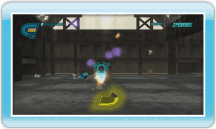

10 |
Basisregels |
 |
|
Het doel in 530 Eco Shooter is om elk level te voltooien met de hoogst mogelijke score. Verdien punten door blikken te raken terwijl je over een vaste baan voortbeweegt. Schiet op blikken terwijl ze door de lucht vliegen voor meer punten. Vernietigde blikken veranderen in blikkenenergie. Zuig de blikkenenergie op om je munitie bij te vullen. Als je door een blik wordt geraakt, raak je een deel van je blikkenenergie kwijt. Als de energiebalk leeg is, is het spel voorbij. De resterende blikkenenergie aan het eind van een level wordt omgezet in bonuspunten en toegevoegd aan je score.
De blikken die moeilijker te raken zijn produceren gewoonlijk meer blikkenenergie wanneer ze vernietigd worden.
|
 ingedrukt om het opzuigen te beginnen. Laat
ingedrukt om het opzuigen te beginnen. Laat  |
 |